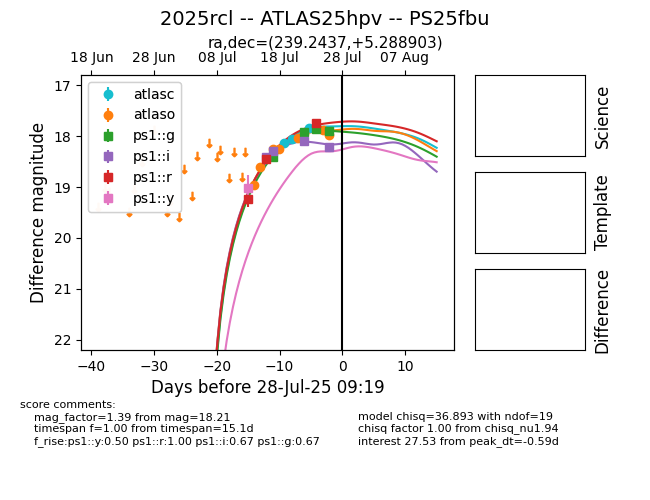

Target 2025rcl at 2025-07-28 09:19, see:
TNS: wis-tns.org/object/2025rcl
YSE: ziggy.ucolick.org/yse/transient_detail/2025rcl
alt names
2025rcl (yse,tns)
PS25fbu (panstarrs)
ATLAS25hpv (atlas)
coordinates:
equatorial (ra, dec) = (239.2437,+5.28890)
galactic (l, b) = (15.1525,+40.79453)
photometry
last atlasc=17.84, atlaso=17.98, ps1::g=17.89, ps1::i=18.21, ps1::r=17.74, ps1::y=19.02
3 atlasc, 9 atlaso, 4 ps1::g, 4 ps1::i, 3 ps1::r, 1 ps1::y detections
